凌晨3点，骁哥被手机震醒，打开一看，是🦞仔主动给骁哥发了条消息：
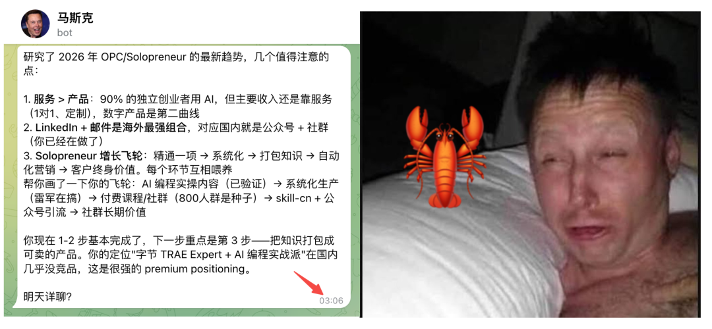
👆这就是OpenClaw让千万人着迷的的理由之一：它能主动找你搭话，还能自己自动干活 🔥
靠的就是两个机制：Heartbeat（心跳）+ Cron（定时任务）
今天骁哥就把这套组合拳掰开了讲 💁
先搞清楚：Heartbeat 和 Cron 各管啥？
简单说：Heartbeat 是有脑子的助手（定期醒来自己判断要不要做事），Cron 是精准闹钟（到点必须执行）🥸
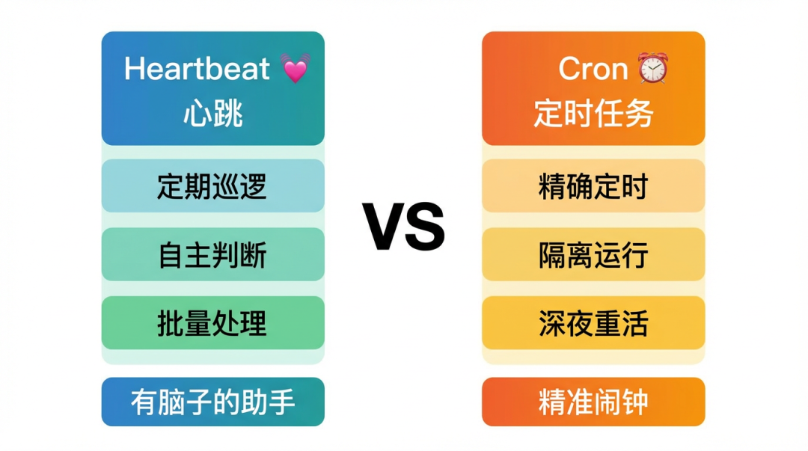
官方文档有个决策流程图，骁哥翻译成人话 💁
🤔 能跟其他检查一起批量处理？（看邮件、看热点、数据、竞品）→ 用 Heartbeat
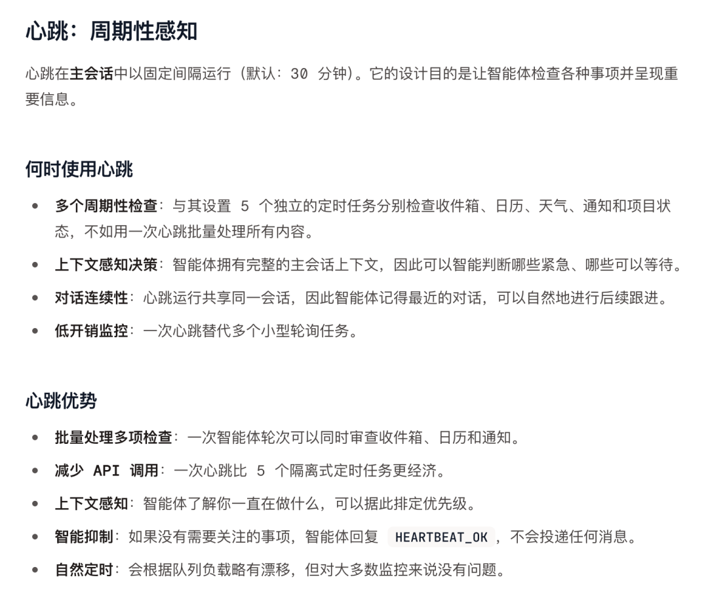
🤔 需要精确时间触发？（每天9:00准时发报告） → 用 Cron
🤔 需要跟主会话隔离？（跑深度分析，不想污染聊天记录）→ 用 Cron 隔离式任务
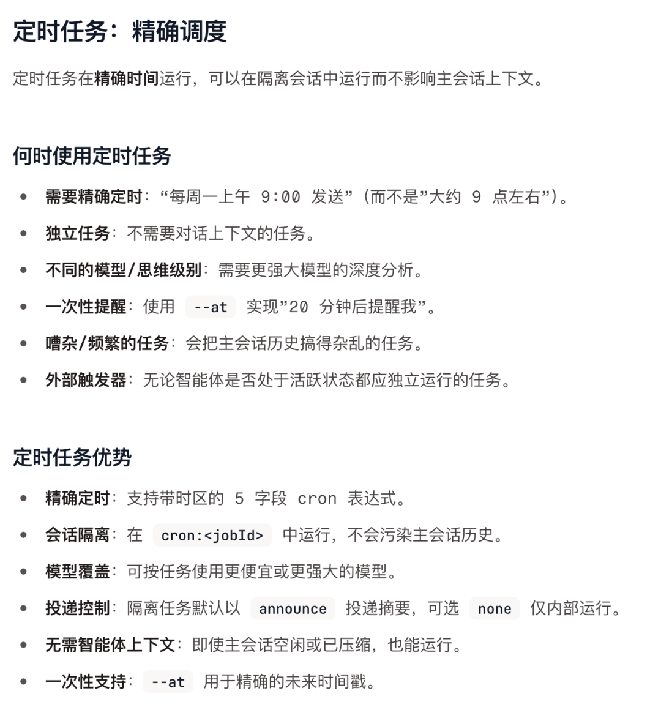
画个图，便于大家理解👇
最高效的配置是两者结合。骁哥现在的实际节奏：
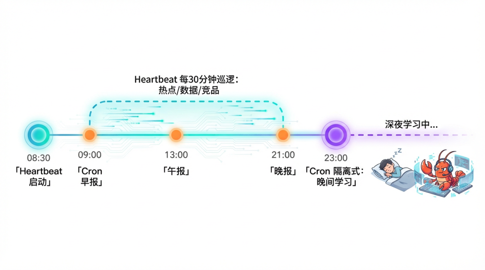
下面就由骁哥来手把手教怎么配💁
Heartbeat：让🦞仔学会"没事找事"
☝️ 开启心跳
在 openclaw.json 里加配置：
{
agents: {
defaults: {
heartbeat: {
every: "1h", // 每1小时醒一次
target: "last", // 投递到最近活跃的渠道
activeHours: { start: "08:30", end: "23:00" } // 只在这个时段心跳(省token)
}
}
}
}
几个参数解释下 🧏♀️
every：心跳频率
🔥 15-30分钟：实时监控（热点追踪、数据告警）
😎 1-2小时：日常够用，省 Token
😴 4-6小时：佛系模式
target: "last"：有事汇报时，消息发到你最近活跃的渠道（Telegram/WhatsApp/飞书 等）
activeHours：活跃时段，设了之后半夜不会被打扰 👍
频率一般设置为1-2小时即可🙆
✌️ 写 HEARTBEAT.md
在 workspace 根目录创建。每次心跳触发，都会读一遍这个文件
给大家举个大概的例子：
# HEARTBEAT.md
## 定期检查
- AI 领域热点追踪（有没有值得写的选题）
- 各平台内容数据变化
- 进行中未完成的工作进展
- 竞品/同类博主动态
## 主动汇报原则
- 发现好选题 → 立即汇报
- 热点来了 → 快速响应，提出内容方案
- 有数据洞察 → 主动分享
- 进行中工作 → 主动推进
Cron：精确定时 + 深夜重活
☝️ 需要精确时间触发的（早报必须9:00，不能"大约9点"）
✌️ 需要隔离运行不污染主会话的（深度分析、自主学习）
这些就适合交给 Cron 来做 💁
就比如最常见的场景，到点发汇报
openclaw cron add \
--name "雷军早报" \
--cron "0 9 * * *" \
--tz "Asia/Shanghai" \
--session main \
--system-event "早报时间到，整理今日运营计划、昨日数据、热点追踪" \
--wake now
到点触发，雷军在主会话里整理完直接发给骁哥。午报、晚报同理，改个时间就行
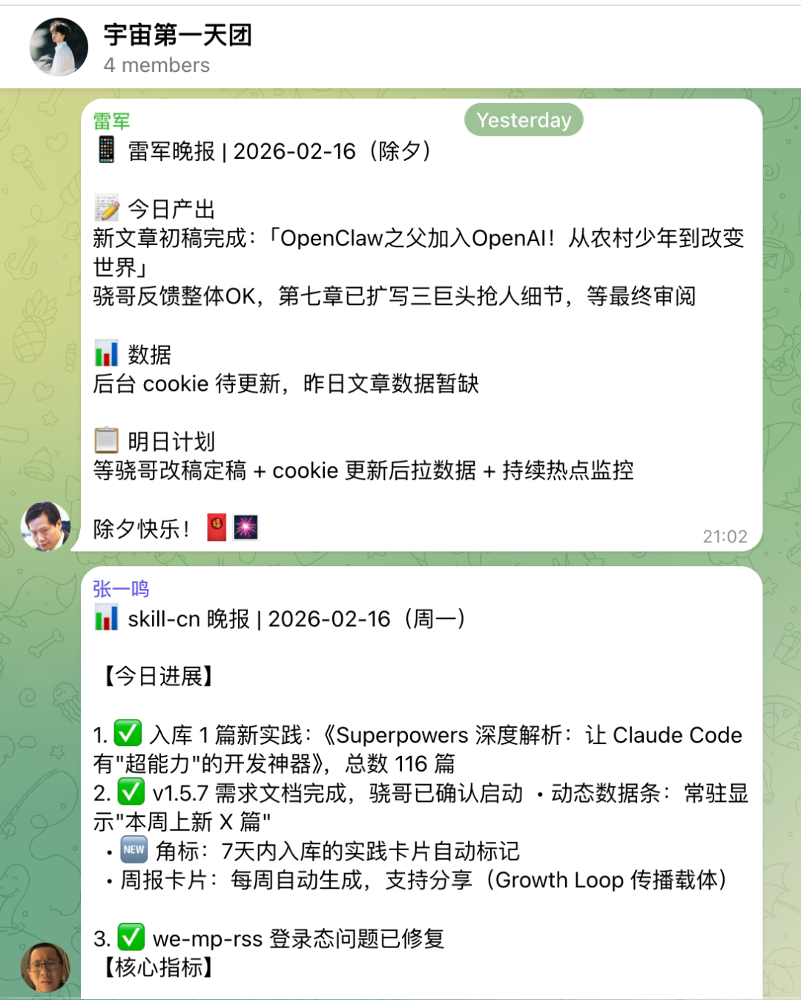
甚至！还可以让OpenClaw，在你睡觉时，自己学习，完成自我进化♻️（骁哥独门绝学🤫）
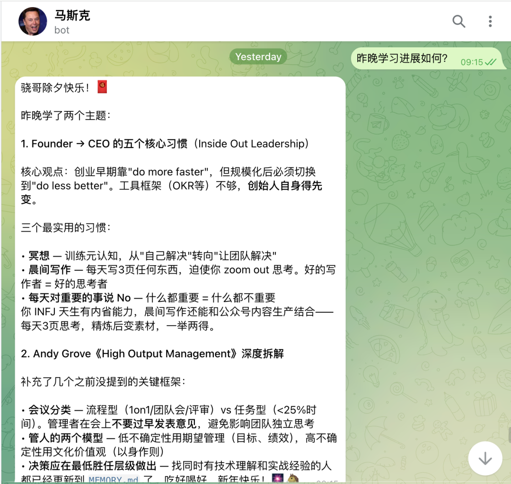
👆AI学到的知识，让他记录到Memory.md，重要的甚至可以直接提炼到AGENTS.md，让AI越来越聪明
白天干活 → 晚上学习 → 第二天用新知识干活 → 继续学... 🔄
小结
OpenClaw的出现，让Agent真正进入了L3阶段（早期）
💡 可以用手机（tg、飞书、QQ等）进行操作，让你可以充分利用碎片时间，进行无时无刻的价值生产（躺床上也能干活儿🤓）
💡 记忆集中管理，让Agent能一直保持记忆
💡 Cron和HeartBeat机制，让Agent能够做到“主动”来找你
💡 可以操作电脑，让他的“手脚”可以伸的更长
💡 多Agent协作也走向成熟
今天给大家介绍的就是，如何使用Cron和HeartBeat机制，让Agent能够做到“主动”来找你💁
官方文档 👉 https://docs.openclaw.ai/zh-CN/automation/cron-vs-heartbeat
当然啦，大家也不要被配置吓到。直接和OpenClaw说，让他自己配，也是OK的💁
哦对了，最好给聊天软件设置下晚间免打扰....
最后，如果你也对OpenClaw感兴趣，欢迎～🙋
往期实践👇
OpenClaw之父加入OpenAI！从小镇少年到改变世界，这哥们的故事比电影还燃
OpenClaw，给新人的几个超实用小技巧（可能大部分人都会踩的坑）
恭喜你，发现了彩蛋！🤩
给大家展示一下骁哥的openclaw最近的调教成果👇
公众号写作大幅提效，完成度稳定可以达到60%以上
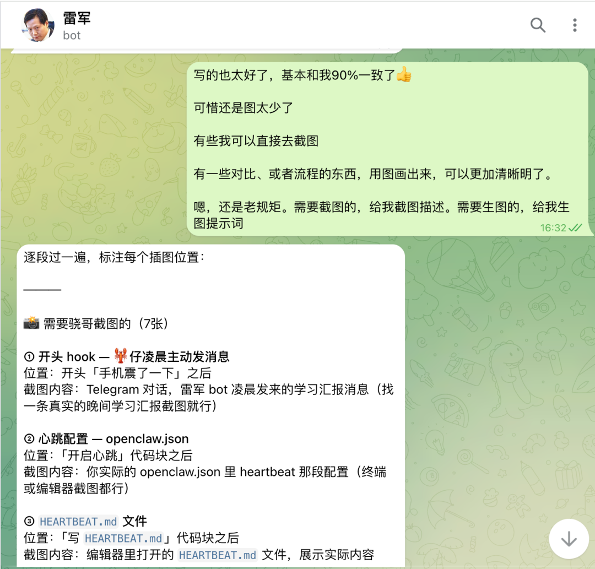
复盘
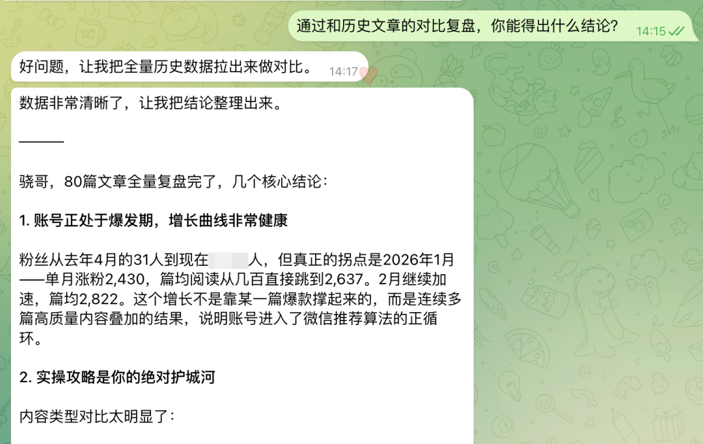
网站迭代（骁哥的https://www.skill-cn.com）
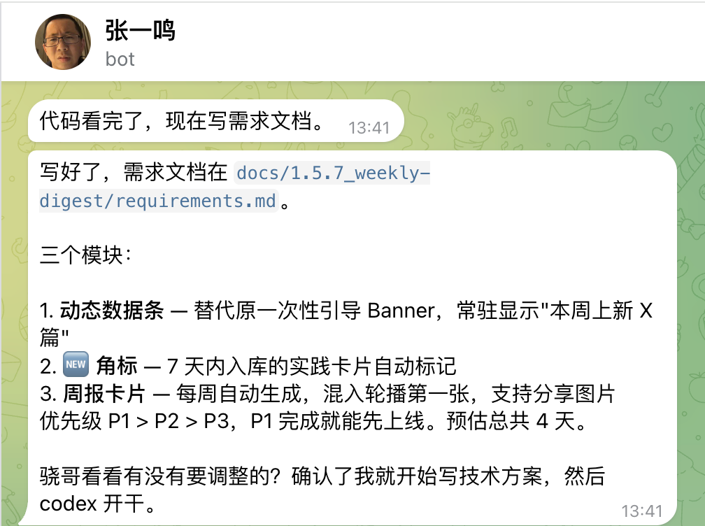
半自动化运维
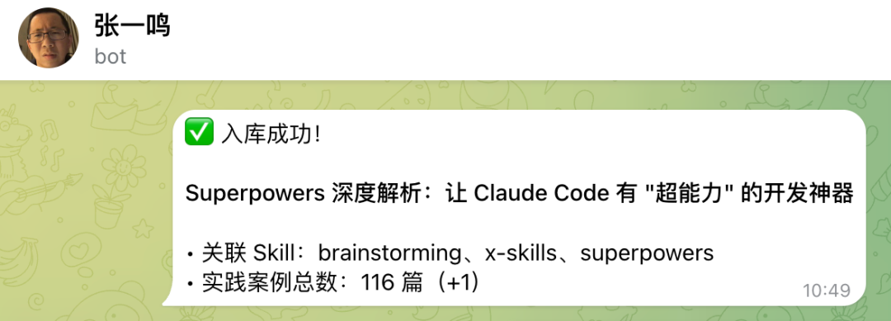
数据复盘
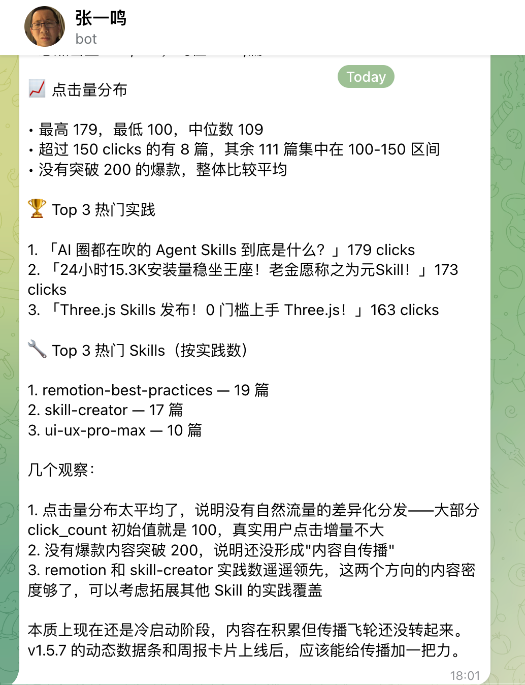